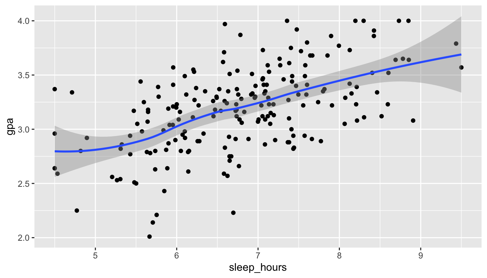
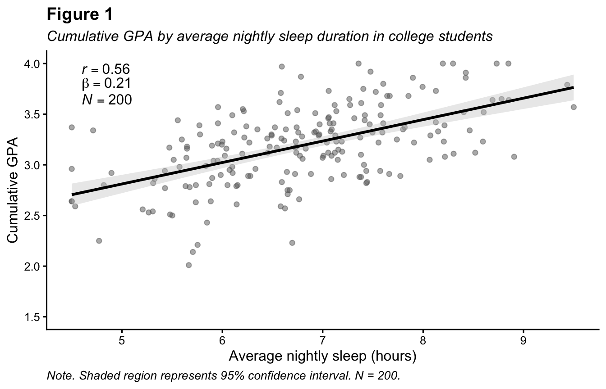
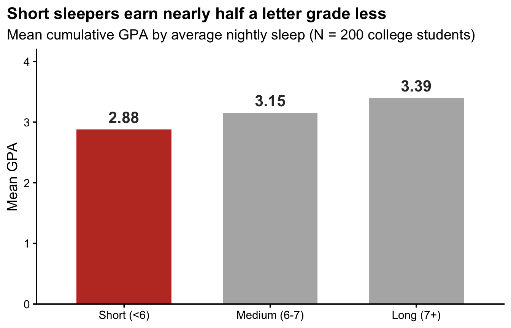
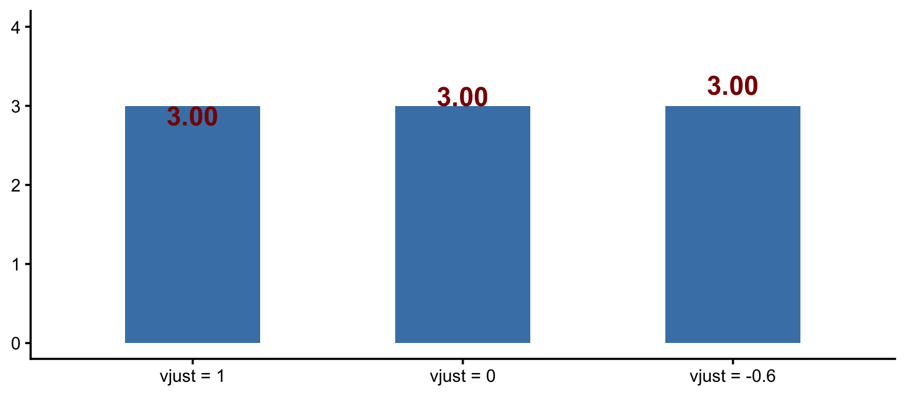
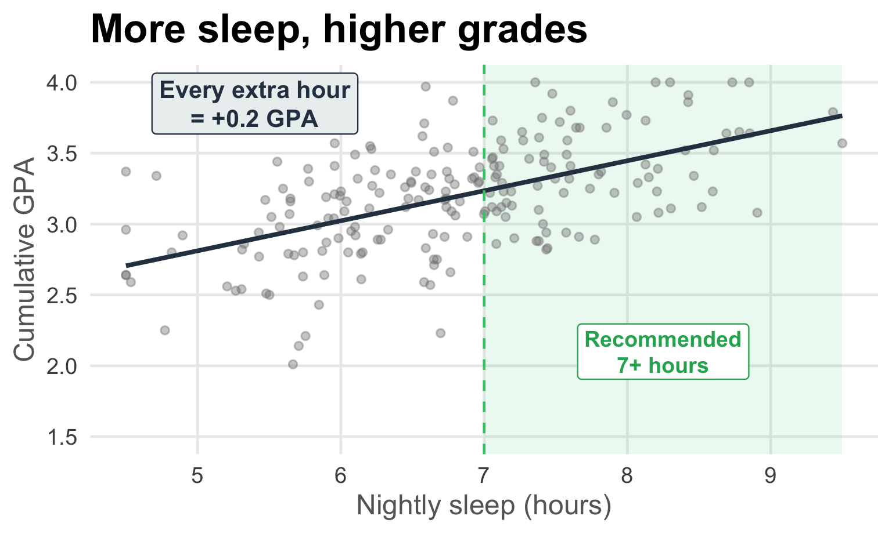
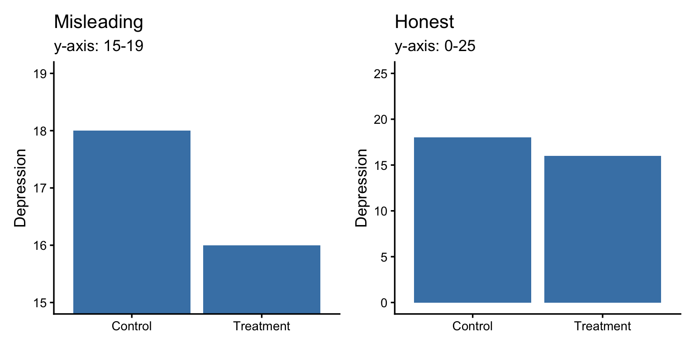
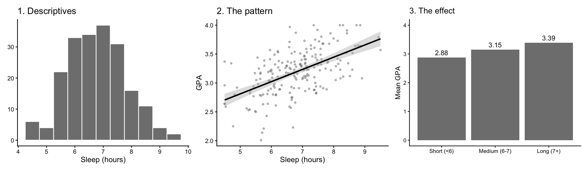
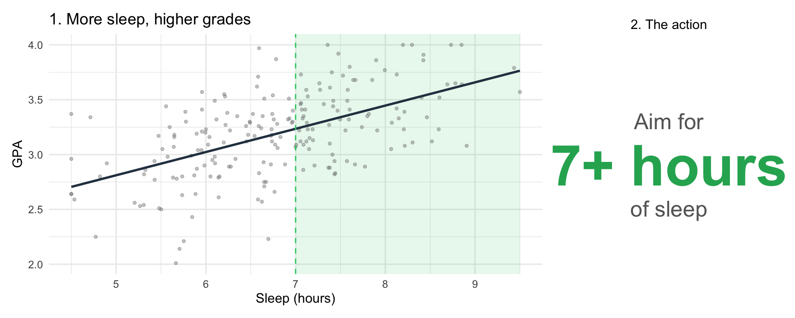
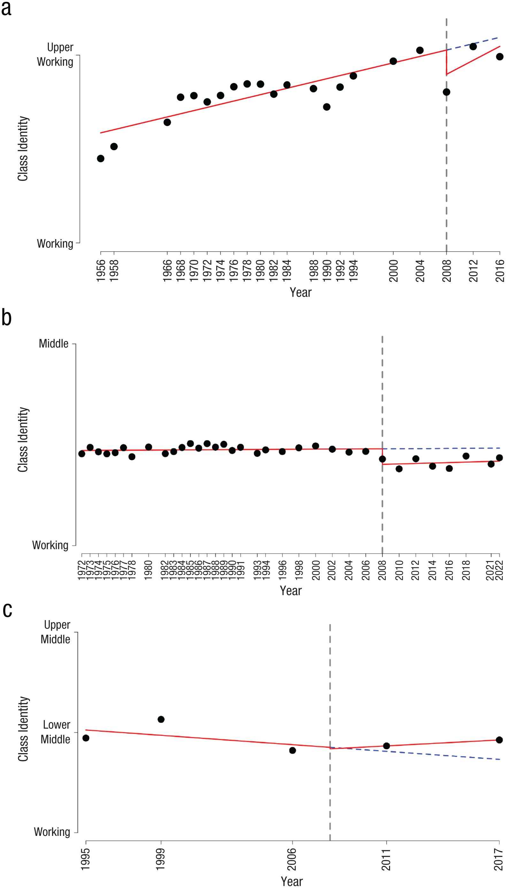

Storytelling with Data
PSY 410: Data Science for Psychology
Dr. Sara Weston
2026-05-27
Why storytelling?
Data alone isn’t enough
You’ve learned to:
- Import and clean data
- Transform and summarize
- Create visualizations
- Handle missing data
But technical skills ≠ communication skills
The data storytelling triad
Why stories work
Stories are memorable:
- 63% of people remember stories
- Only 5% remember statistics
Stories are persuasive:
- Charity brochure study: a story about one child raised 2x more donations than statistics about millions
Decisions are emotional:
- Stories engage emotions; data alone doesn’t
Today’s question
You have one finding. You can present it to:
- Other researchers
- Clinicians or health educators
- The general public
- A live audience at a conference
Is the figure the same for all of them?
No. The data is. The figure isn’t.
Our case study
A simulated dataset of 200 college students:
sleep_hours— average nightly sleepgpa— cumulative GPAyear,study_hours,caffeine_cups
The finding:
Each extra hour of nightly sleep is associated with about +0.21 higher GPA. Students who sleep 7+ hours average 3.39; students who sleep less than 6 average 2.88.
Loading the data — follow along
Paste this in your console to get the dataset.
Note
The data are simulated — 200 fake students with a known sleep–GPA relationship built in. Code that made them: scripts/generate-sleep-study.R.
Same finding, five audiences
Audience 1: You
You’re mid-analysis. You need to know what’s there.
- Audience: yourself
- Question: is there anything here?
- Quality bar: legible, fast
- Annotation: none
For you: just look

Audience 2: Researchers
A reader of a published paper.
- Audience: other psychologists
- Question: how strong is the effect, with what precision?
- Quality bar: APA-style, statistical detail, descriptive title
- New skill: in-plot statistics with
annotate(..., parse = TRUE)
For researchers: a journal figure

The new move: stats annotation
annotate()adds text without needing a data frameparse = TRUEreads the label as an R expression — math notation, Greek letters==(not=) for equality in plotmath
Full code: journal figure
ggplot(sleep_study, aes(x = sleep_hours, y = gpa)) +
geom_point(alpha = 0.5, color = "gray40") +
geom_smooth(method = "lm", color = "black", fill = "gray80") +
annotate("text", x = 4.6, y = 3.95,
label = "italic(r) == 0.56", parse = TRUE, hjust = 0, size = 4.2) +
annotate("text", x = 4.6, y = 3.80,
label = "beta == 0.21", parse = TRUE, hjust = 0, size = 4.2) +
annotate("text", x = 4.6, y = 3.65,
label = "italic(N) == 200", parse = TRUE, hjust = 0, size = 4.2) +
labs(
title = "Figure 1",
subtitle = "Cumulative GPA by average nightly sleep duration in college students",
x = "Average nightly sleep (hours)",
y = "Cumulative GPA",
caption = "Note. Shaded region represents 95% CI. N = 200."
) +
scale_x_continuous(breaks = 4:10) +
coord_cartesian(ylim = c(1.5, 4)) +
theme_classic(base_size = 12) +
theme(plot.title = element_text(face = "bold"),
plot.subtitle = element_text(face = "italic"))Audience 3: Clinicians
An academic advisor making a flyer or running a wellness workshop.
- Audience: practitioners
- Question: what should I do about this?
- Quality bar: at-a-glance, one clear message
- New skill:
geom_text()direct labels + highlight + assertion title
For clinicians: a one-pager

The new move: direct labels
geom_text()puts one label per row of dataaes(label = ...)says which column to displaysprintf("%.2f", x)formats the number (2 decimal places)vjust = -0.6nudges the label above the bar
Why direct labels? The reader shouldn’t need to look at the axis to know the value.
Understanding sprintf()
sprintf() formats numbers (and other values) into strings.
[1] "3.14"[1] "3"[1] "67.5%"[1] "7 hours"[1] "GPA: 3.39"Reading the format string:
%= “format something here”.2= two decimal placesf= floating-point number (decimal)d= integer (no decimal)%%= a literal%sign
Understanding vjust
vjust controls how the label sits relative to its anchor point.
vjust value |
What happens |
|---|---|
1 |
label’s top sits at the data point (label extends down) |
0.5 |
label is centered on the data point |
0 |
label’s bottom sits at the data point (label extends up) |
-0.6 |
label floats above the data point with a gap |
The trick: vjust is “how much of the label is below the anchor.” Negative values lift the label up off the data point.
Seeing vjust in action

Full code: clinician one-pager
group_means <- sleep_study |>
group_by(sleep_group) |>
summarize(mean_gpa = mean(gpa), .groups = "drop") |>
mutate(highlight = sleep_group == "Short (<6)")
ggplot(group_means, aes(x = sleep_group, y = mean_gpa, fill = highlight)) +
geom_col(width = 0.65) +
geom_text(aes(label = sprintf("%.2f", mean_gpa)),
vjust = -0.6, size = 5.5, fontface = "bold", color = "gray20") +
scale_fill_manual(values = c(`TRUE` = "#c0392b", `FALSE` = "gray70")) +
scale_y_continuous(limits = c(0, 4), breaks = 0:4,
expand = expansion(mult = c(0, 0.05))) +
labs(
title = "Short sleepers earn nearly half a letter grade less",
subtitle = "Mean cumulative GPA by average nightly sleep (N = 200)",
x = NULL, y = "Mean GPA"
) +
theme_classic(base_size = 14) +
theme(legend.position = "none",
plot.title = element_text(face = "bold", size = 16))Audience 4: The public
Someone scrolling a feed for two seconds.
- Audience: general public
- Question: is there a number I should remember?
- Quality bar: one number, square format, brand-bold
- New skill: text-as-data — ggplot without a chart
For the public: a social card
The new move: text-as-data
ggplot()with no data — the canvas is emptyannotate()places elements at chosen coordinatestheme_void()removes axes and gridlinesplot.backgroundpaints the canvas
A figure doesn’t have to contain a “chart.”
Full code: social card
ggplot() +
annotate("text", x = 0.5, y = 0.78,
label = "+0.5", size = 38, fontface = "bold",
color = "white", hjust = 0.5) +
annotate("text", x = 0.5, y = 0.60,
label = "GPA points", size = 9,
color = "white", hjust = 0.5) +
annotate("text", x = 0.5, y = 0.40,
label = "Students who sleep 7+ hours earn\nhigher grades than those who sleep < 6",
size = 5.5, color = "white", hjust = 0.5, lineheight = 1.2) +
annotate("segment", x = 0.25, xend = 0.75, y = 0.20, yend = 0.20,
color = "#2ecc71", linewidth = 1.2) +
annotate("text", x = 0.5, y = 0.13,
label = "PSY 410 · N = 200", size = 3.8,
color = "gray70", hjust = 0.5, fontface = "italic") +
xlim(0, 1) + ylim(0, 1) +
coord_fixed() +
theme_void() +
theme(
plot.background = element_rect(fill = "#1a2942", color = NA),
panel.background = element_rect(fill = "#1a2942", color = NA),
plot.margin = margin(20, 20, 20, 20)
)A note on honest framing
| Framing | What it actually means |
|---|---|
| “β = 0.21” | The journal version |
| “0.5 GPA gap” | The clinician version |
| “Higher grades” | The social card |
All true. Each chooses how much detail to drop.
Drop too much and you cross into misleading. We’ll come back to this.
Audience 5: A live audience
A roomful of people during a 30-second slide in your talk.
- Audience: conference attendees
- Question: what’s the headline?
- Quality bar: readable from the back row
- New skill:
geom_vline(),annotate("rect"),annotate("label")
For a talk: one slide, one point

The new move: reference + region + callout
annotate("rect", ...)draws a shaded region (use-Inf/Infto span the panel)geom_vline()adds a reference line at a valueannotate("label", ...)isannotate("text")with a background
Full code: talk slide
ggplot(sleep_study, aes(x = sleep_hours, y = gpa)) +
annotate("rect", xmin = 7, xmax = 9.5, ymin = -Inf, ymax = Inf,
fill = "#2ecc71", alpha = 0.10) +
geom_point(alpha = 0.4, color = "gray50", size = 2) +
geom_smooth(method = "lm", color = "#2c3e50", linewidth = 1.4, se = FALSE) +
geom_vline(xintercept = 7, linetype = "dashed",
color = "#2ecc71", linewidth = 0.8) +
annotate("label", x = 8.25, y = 2.1,
label = "Recommended\n7+ hours",
color = "#27ae60", fontface = "bold", size = 5,
label.size = 0, fill = "white", lineheight = 1) +
annotate("label", x = 5.4, y = 3.85,
label = "Every extra hour\n= +0.2 GPA",
color = "#2c3e50", fontface = "bold", size = 5.5,
label.size = 0, fill = "#ecf0f1", lineheight = 1) +
labs(title = "More sleep, higher grades",
x = "Nightly sleep (hours)", y = "Cumulative GPA") +
scale_x_continuous(breaks = 4:10) +
coord_cartesian(ylim = c(1.5, 4)) +
theme_minimal(base_size = 18) +
theme(plot.title = element_text(face = "bold", size = 26))What you now have
| Audience | Annotation skill |
|---|---|
| You | (restraint) |
| Researchers | annotate(..., parse = TRUE) for stats |
| Clinicians | geom_text() direct labels + highlight |
| Public | Text-as-data with theme_void() |
| Live audience | geom_vline() + annotate("rect") + annotate("label") |
Five figures. One finding. One R skill toolkit.
Pair coding break
Your turn: two audiences
Pick one figure from your final project draft. (If you don’t have one, use any figure from a recent assignment.)
Produce two versions:
- For your professor — what would go in your final report
- For your roommate — a single image you’d text them with the takeaway
Use at least one annotation technique from today on each version.
Time: 12 minutes
Before we move on
📤 Submit your code on Canvas for participation credit. Paste what you have — both versions don’t need to be polished.
Misleading figures
The same move, weaponized
Every annotation we just learned can also mislead:
- Reference lines that imply causation
- Shaded regions that suggest a threshold the data doesn’t support
- Direct labels that hide the spread
- Assertion titles that overstate
The skill is knowing when you’ve crossed the line.
Common deceptions
- Truncated y-axes — exaggerate small differences
- Dual axes — imply false relationships
- Cherry-picked ranges — hide broader trends
- 3D and area charts — distort comparisons
Example: a truncated y-axis

Same data. The left chart will get reposted; the right one won’t.
When truncation is fine
✅ The baseline is non-zero (body temperature, blood pressure)
✅ You’re showing change over time (line plot)
✅ You explicitly note it in the caption
❌ Never truncate bar charts. Bars encode magnitude — the bar must start at zero.
One figure isn’t a story
A sequence makes the story
One figure shows a finding.
A sequence makes an argument:
- Set the stage
- Show the pattern
- Show what it means
Your final project is a sequence. Your video presentation is a sequence.
Sequencing for a paper: sleep & GPA
Build the reader up to your finding.

Order: sample → relationship → effect size. Each figure earns the next.
Sequencing for a talk: sleep & GPA
Lead with the punchline.

Order: headline → action. The headline figure carries the evidence; the action slide says what to do about it.
Famous data stories: Nightingale

Florence Nightingale (1858)
Showed Parliament that more soldiers died of preventable disease than battle wounds. Changed military medicine.
The blue wedges (disease) dwarf the red (wounds). The visual carries the argument.
Famous data stories: Minard

Charles Joseph Minard’s “Carte Figurative” (1869) — Napoleon’s 1812 Russian campaign. Six variables on one chart: army size (band width), location (geography), direction (color), distance, temperature (bottom strip), time.
Famous data stories: Rosling
Hans Rosling — 200 Countries in 200 Years (4 min video)
A bubble chart of life expectancy vs. income, animated across two centuries.
He made global development legible to a general audience by adding time as a fourth dimension (animation).
Apply this to your final project
Your final video presentation is a sequence:
- Slide 1-2: the question and why it matters
- Slide 3-4: what the data look like (descriptive)
- Slide 5-6: the main finding (with annotation)
- Slide 7: what we should do with it
Every figure earns the next. Cut anything that doesn’t.
Critique exercise
Critique these figures
For each:
- Who is the audience?
- What story is it trying to tell?
- What annotation moves did the author make?
- How would you redesign it for a different audience?
Figure 1

Figure 2

Wrapping up
The storytelling checklist
Before finalizing any figure, ask:
A note on APA formatting
You’ll receive a handout on APA figure formatting.
- Journals have different requirements
- APA is a starting point, not gospel
- Focus on clarity and communication first
Note
The handout covers the formal rules. Class time is better spent on clarity than on margin sizes.
Head start: Assignment 8
Start the reproducible report due next week. Pick one dataset: palmerpenguins::penguins, psych::bfi, a nycflights13::flights subset, or your final project data.
Build a minimal .qmd with:
- YAML header including
author,date,toc: true,code-fold: true - A 2-3 sentence intro stating your research question
- A setup chunk +
glimpse()of your data - One exploratory visualization with a caption
- One annotation move from today (assertion title, highlight, callout, etc.)
- Render to HTML to confirm it works end-to-end
Note
A8 is not your final project. It’s a short, focused reproducible report. Your final project is due June 10 and will be much more substantial.
Before next class
📖 Read:
- A short reading on correlation and simple regression — to be posted on Canvas
✅ Do:
- Work on Assignment 8 (due Sunday May 31 at 11:59 PM)
- Keep moving on your final project (full submission due Wed Jun 3)
- Revise your figures using one audience-shaped version from today
Heads up: The Final Prediction
Next session (Correlation & Regression) we’ll reveal Fun Challenge 10: The Final Prediction.
A quick one — predict the correlation from a scatterplot. The deadline is Tuesday at 11:59 PM, so you’ll have Monday in class to work on it with your team.
Key takeaways
- Data + Visuals + Narrative = Change
- The figure is an argument for a specific reader. Five audiences → five figures.
- Annotation is your toolkit:
annotate(),geom_text(),geom_vline(), reference lines, shaded regions. - Be honest — the same techniques that clarify can also deceive.
- A sequence is a story. One figure earns the next.
The one thing to remember
A figure is an argument made for a reader.
Ask “who’s reading?” before you ask “what’s the chart?”
See you Monday for correlation and simple regression!
PSY 410 | Session 16